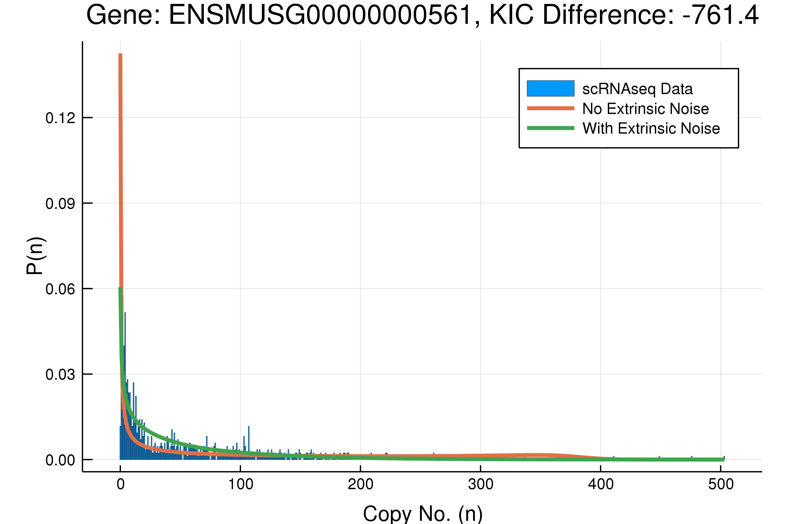

Model Selection

After the quality control, 263 out of 500 genes have been fitted with the model. The distribution of KIC differences (KIC of compound model - KIC of telegraph model) appears to have a second mode in the negative hundreds range (Figure 4). Since a smaller KIC means the corresponding model is preferred, this second mode implies the presence of a group of genes that favour the model with extrinsic noise.
With a closer examination of the model fitting (Figure 5), the compound model with extrinsic noise seem to fit moderately better with the data in the range with small mRNA copy numbers (around 0-10) no matter whether the compound model is preferred or not. On the other hand, in the intermediate range of mRNA number the telegraph model aligns consistently better with the data distribution. It is in the tail of the distribution that the two model fittings exhibit significant differences (better illustrated in log scale plots). When the compound model is preferred the tail of the telegraph model fitting tends to diverge, and the exact opposite occurs when the telegraph model is preferred. If difference in the two KICs are small, the discrepancy between tails of the two fitted distributions is also very small.
Since the main contributor of KIC is the likelihood, a more slowly decaying curve for the extrinsic noise model at mRNA number close to zero will be greatly favoured when most data points cluster around zero. Likewise when the data are more distributed to the intermediate range of mRNA number the telegraph model will gain extra preference. In terms of the tail of the distribution, although difference between the two fitting curves in logarithmic scale can be large, the sparse data points in this region make it a less significant contribution to the overall likelihood.